SECCIÓN 4D
FRENOS DELANTEROS
ESPECIFICACIONES
Especificaciones generales
| Aplicación | Valor(es) |
| discos de los frenos delanteros | Diámetro | 296 mm |
| Espesor | 29 mm |
| Espesor de descarte | 27.4 |
| Excentricidad lateral (instalada) | 0.04 mm |
| Diámetro de la pinza de freno | delantero (no frontal) | 45 mm + 45 mm (Dual) |
| Pastilla de freno delantero | Espesor | 10.5 mm |
| Espesor de descarte | 2 mm |
Especificaciones de apriete de la sujeción
| Aplicación | N•m | Árbol de transmisión izquierdo | Articulación |
| Tornillo de retención del disco | 8 | - | 71 |
| Tornillos guía de la pinza de freno | 44 | 32 | - |
| Tornillos del soporte de la pinza de freno | 170 | 125 | - |
| Tornillo de fijación del manguito a la entrada de la pinza de freno | 44 | 32 | - |
DIAGNÓSTICO
Inspección de las pastillas de freno
- Levante y apoye el vehículo adecuadamente.
- Desmonte las ruedas delanteras. Consulte la Sección 2E, Neumáticos y ruedas.
- Compruebe visualmente el espesor mínimo y el desgaste de las pastillas de freno.
- Mida el espesor. Consulte el apartado "Especificaciones generales" de esta sección.
- Monte las zapatas de freno sólo en conjuntos de eje.
- Monte las zapatas de freno sólo en conjuntos de eje.
- Monte la ruedas delanteras. Consulte la Sección 2E, Neumáticos y ruedas.
- Baje el vehículo.
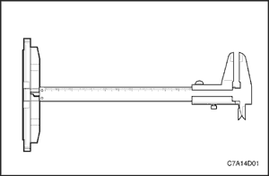


Control del rotor
Los discos de freno se fabrican con estrechas tolerancias de variación de espesor, planitud y excentricidad lateral, sin embargo, durante su utilización se forman ranuras y picaduras. La falta de uniformidad en las superficies de frenado del disco pueden dar lugar a una frenada incorrecta o a pulsaciones del pedal durante la acción de frenado. El acabado de la superficie del disco también es importante porque un acabado inapropiado puede provocar inestabilidad y desgaste rápido del forro de la zapata. El disco de freno que no cumpla las especificaciones debe rectificarse o sustituirse. El rectificado del disco sólo debe realizarse con un equipo de precisión.
La variación del espesor puede comprobarse midiendo el disco de freno en cuatro o más puntos alrededor de la circunferencia del mismo. Todas las mediciones deben efectuarse a la misma distancia del borde del disco. Un disco que varíe más de 1,0 mm (0,04 pulgadas) puede provocar pulsaciones en el pedal y/o vibraciones en la parte delantera durante la frenada. El espesor debe medirse con micrómetros disponibles en comercios y debe tener 27,4 mm (1,1 pulg.) o más.
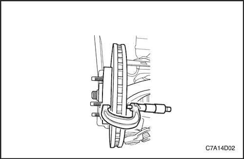
Se puede permitir un ligero rayado de las superficies del disco si éste no sobrepasa los 0,40 mm (0,016 pulg.) de profundidad. Puede medirse el rayado con micrómetros para frenos disponibles en comercios.
La excentricidad lateral no puede superar los 0,04 mm (0,001 pulgadas). Si la excentricidad lateral supera el valor especificado, asegúrese de que no haya suciedad entre el disco y el cubo de rueda y que las superficies de contacto sean suaves y carezcan de rebabas. Use un comparador disponible comercialmente para comprobar la excentricidad lateral según el siguiente procedimiento:
- Seleccione la posición de punto muerto en la caja de cambios y levante el vehículo.
- Para mantener el equilibrado de la rueda, marque las posiciones de la rueda respecto al cubo y desmonte la rueda delantera.
- Sujete el disco de freno en el cubo de la rueda.
- Monte un comparador en la pinza de freno.
- Sitúe la punta del indicador a unos 10 mm (0,39 pulgadas) del borde exterior del disco de freno, perpendicular al disco y sometido a una ligera precarga. Observe el indicador mientras gira el disco.
- Una vez terminada la medición, retire el comparador y quite las tuercas de la rueda.
- Si fuera necesario, rectifique el disco con un equipo de precisión. Vuelva a medir la excentricidad después del rectificado. Si la excentricidad sobrepasa los 0,04 mm (0,001 pulg.) después de rectificar el disco, éste debe sustituirse.
- Alinee las marcas que se hicieron antes de desmontar la rueda y monte la rueda delantera.
- Baje el vehículo.
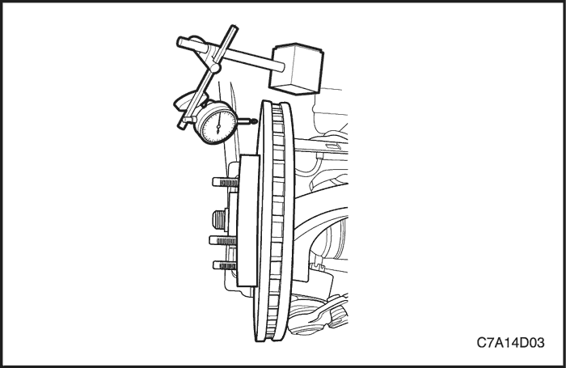
MANTENIMIENTO Y REPARACIÓN
servicio con vehículo en marcha
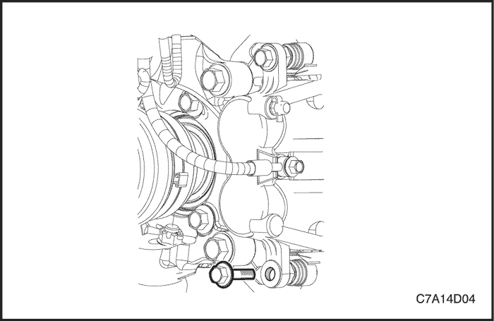
Pastillas de freno
Procedimiento de desmontaje
- Levante y apoye el vehículo adecuadamente. Consulte la Sección 0B, Información general.
- Para mantener el equilibrado de la rueda, marque la posición de la rueda delantera respecto al cubo.
- Desmonte la rueda delantera. Consulte la Sección 2E, Neumáticos y ruedas.
- Quite el tornillo guía inferior de la pinza de freno.
Importante: No es necesario desmontar la pinza de freno para el mantenimiento de las pastillas de freno.
- Gire la pinza de freno hacia arriba y fíjela con un cable mecánico pesado o equivalente.
- Desmonte las pastillas de freno.
procedimiento de montaje
- Monte las pastillas del freno.
- Si se montan pastillas nuevas, éstas serán más gruesas que las pastillas desgastadas que se desmontaron. Si fuera necesario, empuje el pistón de la pinza hacia dentro.
- Coloque el tornillo guía inferior de la pinza de freno.
Importante: No dañe la junta guardapolvo del pistón cuando tire de la pinza hacia abajo para volver a colocar el tornillo de fijación inferior de la pinza de freno.
Apretar
Apriete el tornillo de la guía inferior de la pinza de freno hasta 44 N•m (32 lb-pie).
- Alinee las marcas que se hicieron al desmontar la rueda delantera y monte la rueda. Consulte la Sección 2E, Neumáticos y ruedas.
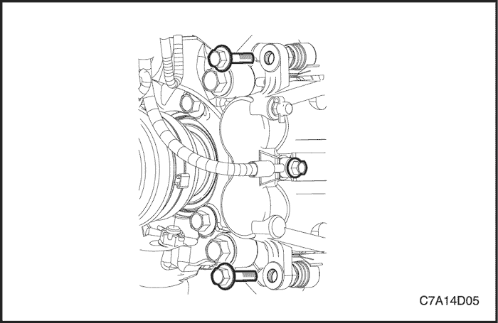
Calibrador
Procedimiento de desmontaje
- Levante y apoye el vehículo adecuadamente. Consulte la Sección 0B, Información general.
- Para mantener el equilibrado de la rueda, marque la posición de la rueda delantera respecto al cubo. Desmonte la rueda. Consulte la Sección 2E, Neumáticos y ruedas.
- Quite el tornillo de la entrada del manguito de freno de la pinza. Quite las juntas anulares.
- Para que no haya pérdida de líquido o entre suciedad, tape las aberturas de la entrada de la pinza y el manguito de freno.
- Quite los tornillos guía de la pinza de freno.
- Desmonte la pinza de freno.
Aviso: Sujete la pinza de freno con un cable mecánico pesado o equivalente, siempre que esté separada de su fijación y el manguito flexible de freno hidráulico siga conectado. De no fijar la pinza de este modo, el manguito flexible de freno deberá soportar el peso de la pinza, lo que podría provocar daños en el manguito y causar una fuga de líquido de frenos.
procedimiento de montaje
- Coloque los tornillos guía de la pinza de freno.
Apretar
Apriete los tornillos guía de la pinza de freno hasta 44 N•m (32 lb-pie).
- Monte el manguito de freno en la pinza con el tornillo y coloque las juntas anulares.
Apretar
Apriete el tornillo del manguito de freno a la entrada de la pinza hasta 44 N•m (32 lb-pie).
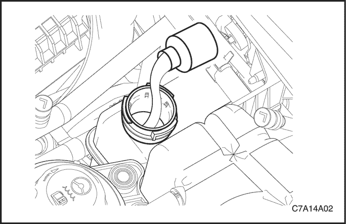
- Alinee las marcas que se hicieron al desmontar la rueda delantera y monte la rueda. Consulte la Sección 2E, Neumáticos y ruedas.
- Baje el vehículo.
- Llene el depósito del cilindro maestro hasta el nivel adecuado con líquido de frenos limpio.
- Purgue el aire del sistema de frenos. Consulte la Sección 4A, Frenos hidráulicos.
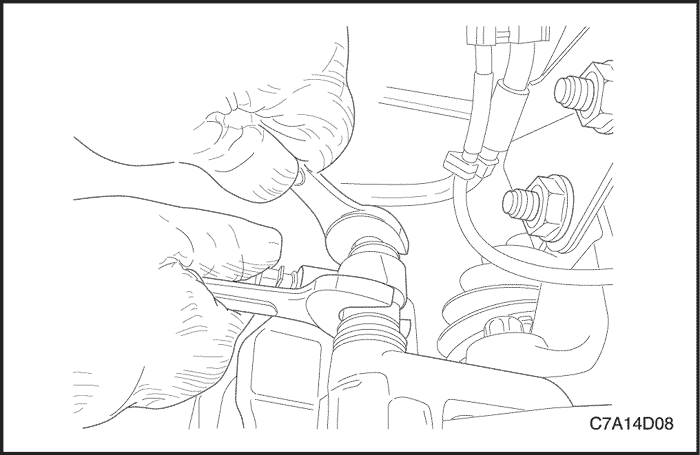
Soporte de la pinza de freno
Procedimiento de desmontaje
- Quite los tornillos guía de la pinza de freno, retire la pinza y las pastillas.
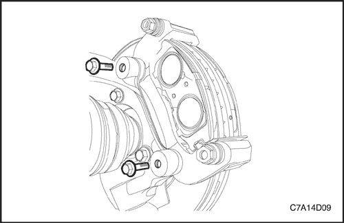
- Quite los tornillos del conjunto soporte de la pinza de freno.
procedimiento de montaje
- Coloque los tornillos del conjunto soporte de la pinza de freno.
Apretar
Apriete los tornillos del soporte de la pinza de freno hasta 170 N•m (125 lb-pie).
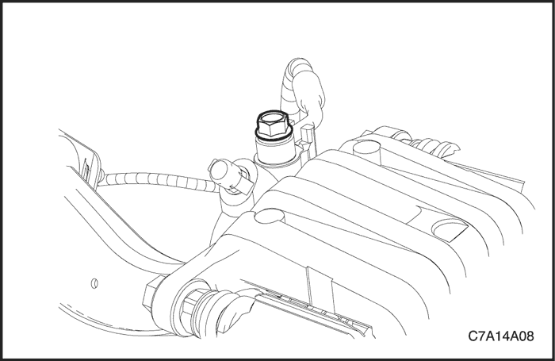
- Monte las pastillas de freno y la pinza.
Apretar
Apriete los tornillos guía de la pinza de freno hasta 44 N•m (32 lb-pie).
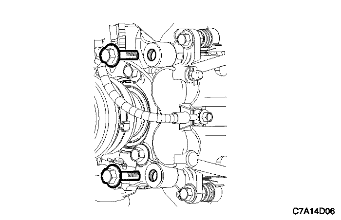
Rotor
Procedimiento de desmontaje
- Desmonte el soporte de la pinza de freno. Consulte el apartado "Soporte de la pinza de freno" de esta sección.
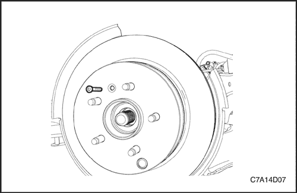
- Quite el tornillo de retención del disco de freno.
- Desmonte el disco de freno.
procedimiento de montaje
Importante: Para garantizar un frenado uniforme, rectifique siempre los dos discos aunque solamente haya un disco defectuoso.
- Monte el disco en el cubo de rueda delantera y coloque el tornillo de retención.
Apretar
Apriete el tornillo de retención del disco hasta 8 N•m (71 lb-pulg.).
- Ponga unas cuantas gotas de masilla de fijación de roscas en los tornillos de la pinza de freno y monte el soporte de la pinza.
Apretar
Apriete los tornillos del soporte de la pinza de freno hasta 170 N•m (125 lb-pie).
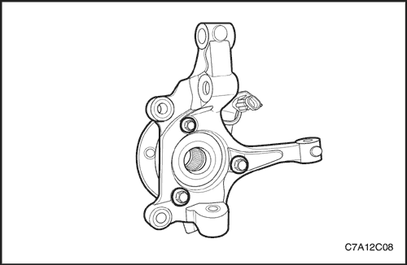
Guardasalpicaduras
Procedimiento de desmontaje
- Desmonte el disco de freno. Consulte el apartado "Disco" de esta sección.
- Desmonte el cubo. Consulte la
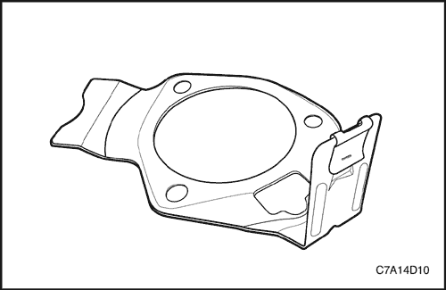
- Desmonte la placa guardabarros.
procedimiento de montaje
- Monte la placa guardabarros.
- Fije el guardasalpicaduras entre la mangueta y el conjunto del buje.
- Monte el disco. Consulte el apartado "Disco" de esta sección.
DESCRIPCIÓN GENERAL Y FUNCIONAMIENTO DEL SISTEMA
Pinza de freno de disco
Esta pinza de freno dispone de un alojamiento dual y va montada a la mangueta con dos tornillos de fijación. La presión hidráulica que se crea al pisar el pedal de freno se convierte, por la acción de esta pinza, en una fuerza de detención. Esta fuerza actúa igualmente contra el pistón y contra la parte inferior del interior de la pinza para desplazar el pistón hacia fuera y hacer que se deslice la pinza hacia dentro, ejerciendo una acción de pinza sobre el disco de freno. Esta acción de pinza fuerza los forros contra el disco de freno, creando un rozamiento capaz de parar el vehículo.
- Sustituya todos los componentes incluidos en los kit de reparación utilizados para reparar esta pinza de freno.
- Lubrique las piezas de goma con líquido de frenos limpio para facilitar su montaje.
- No utilice aire comprimido del taller, con un cierto contenido de aceite, en las piezas del freno, ya que se pueden ocasionar daños a los componentes de goma.
- Si se desmonta o se desconecta cualquier componente del sistema hidráulico, puede resultar necesario tener que purgar la totalidad o una parte del sistema de frenos. Consulte la Sección 4A, Frenos hidráulicos.
- Sustituya las zapatas de freno sólo en conjuntos de eje.
- Los valores de los pares de apriete especificados son para elementos de sujeción secos y sin lubricar.
- Efectúe las labores de reparación en un banco limpio y sin ningún material grasiento.